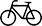
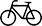
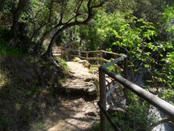
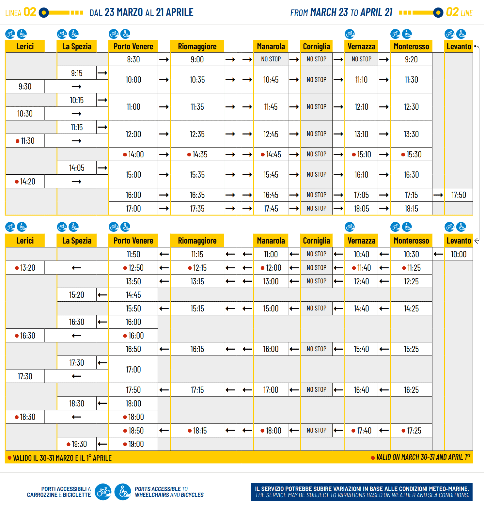
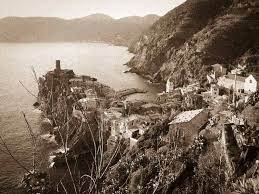
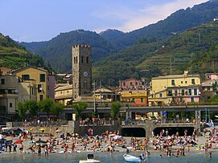
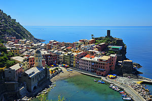
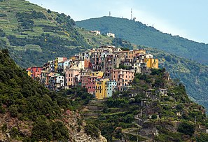
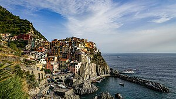
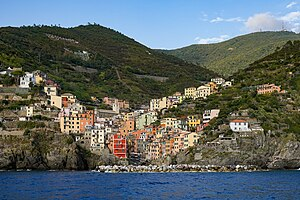

The Walk
The walk from Monterosso to Riomaggiore will take you approximately two hours, give or take an hour depending on the weather conditions and your physical shape.

Transport
By train in the Cinque Terre
Train is the most economical and fastest way of travelling here. Every town of the Cinque Terre has a railway station. Trains run very frequently here, but we would recommend you to make sure that you either take a printout of the timetable or download one of the smartphone apps (you will find them searching for key words like treno, Italian train). There is a special kind of Cinque Terre Card, which includes rail travel. It is very convenient; moreover, you will not have to buy tickets and track them all the time. Make sure that first time the ticket must be punched BEFORE boarding a train at one of the special automatic machines at the station, photo. Additional information: website of Trenitalia Note: to ensure that tourists vacations in the Cinque Terre do not get spoiled, at least 50% of trains run in this region even if there is a transport strike (from Santa Margherita Ligure to La Spezia). See more at Click This Link
 

On foot or by bike in the Cinque Terre

The walking trails are the main attraction of the Cinque Terre. Therefore, majority of tourists move along them. The easiest one is the Blue Path, naturally. Some of its sections can be crossed on bikes as well, though it is not very convenient as they pass close to the sea and there are too many narrow passages. Almost all the others paths are suitable for bikes. All necessary information is available in the section entirely dedicated to trails. See more at Click This Link

boat_icon.png

Boat is not a very convenient mode of travelling among the Cinque Terres villages, but from them you get a completely different view on the panoramic sight of the coast. You can also easily reach Portovenere on a boat. The only village in the Cinque Terre that cannot be reached by boats is Corniglia. The season opens late in March and closes early in November. Schedule of boats is given in the table. Sometimes there can be minor changes depending on the season (date is shown on the table, and new schedule is available only on the day the schedule is changed); so make sure to check it when your arrival in the Cinque Terre. See more at Click This Link
.png)
Buses in the Cinque Terre
There are no buses running between the villages of the Cinque Terre. Every village has its own bus running on short routes described below: Riomaggiore: from the village centre to the cemetery. Some journeys include routes to Biassa and the Pass of Telegrafo. Manarola: from the village centre to the parking lot and small hamlet of Volastra. Corniglia: from the village centre to the railway station. Vernazza: connects the town with the nearest hamlets (for example, San Bernardino), as well as with Reggio Santuary and the Black Madonna. Monterosso: trip around the town and goes up to the "Soviore" Sanctuary (the most ancient temple in Liguria). For using the bus services, you need to buy the Cinque Terre Card (you can buy it from the driver). Bus timetable: can be found on this website. But it is always better to confirm it on the spot upon your arrival. Buses from La Spezia: There are also many routes connecting La Spezia with the small villages that can turn out very useful if you like hiking and do not want to trek through the entire path on foot. For example, from La Spezia you can reach Portovenere by bus 11/P, Biassa ( number 19), Campiglia (20), Volastra (29). Cost: a few euros. Additional information: website with timetable of all the routes. See more at Click This Link
History

Cinque Terre is mentioned in documents dating to the 11th century. Monterosso and Vernazza were settled first and the other villages grew later, whilst within the territory of the Republic of Genoa. In the 16th century, the inhabitants reinforced existing forts and built new defensive towers to protect the population from attacks by the Turks. Cinque Terre experienced an economic decline from the 17th to 19th centuries,[citation needed] recovering when an arsenal was built in La Spezia and it gained a railway link to Genoa. Bombing and fighting during World War II caused extensive damage to the Cinque Terre. The railway led to migration from the area and a decline in traditional industries until the growth of tourism from the 1970s onward brought some prosperity. The predominant crops in the area have been grapes and olives. Some fishermen were based in Monterosso, but the area's gaily painted fishermen's cottages were conceived in the late 1970s as a tourist attraction. Because of its exceptional cultural and ecological assets, UNESCO added Cinque Terre to its list of World Heritage Sites in 1997.[2] On 25 October 2011, torrential rain caused floods and mudslides in Cinque Terre. Nine people were killed and villages were severely damaged, particularly Vernazza and Monterosso al Mare.[3] The heavy rainfall event was favoured by the crisis of the traditional and less remunerative cultivation of terraced landscapes which sixty years before started a progressive decline and reduction of maintenance. It was partially balanced by the vegetation that spontaneously developed on abandoned terraces, a role underlined by a part of the existing scientific literature
Gallery
    